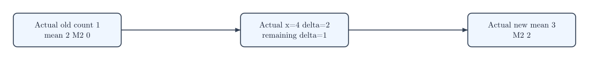
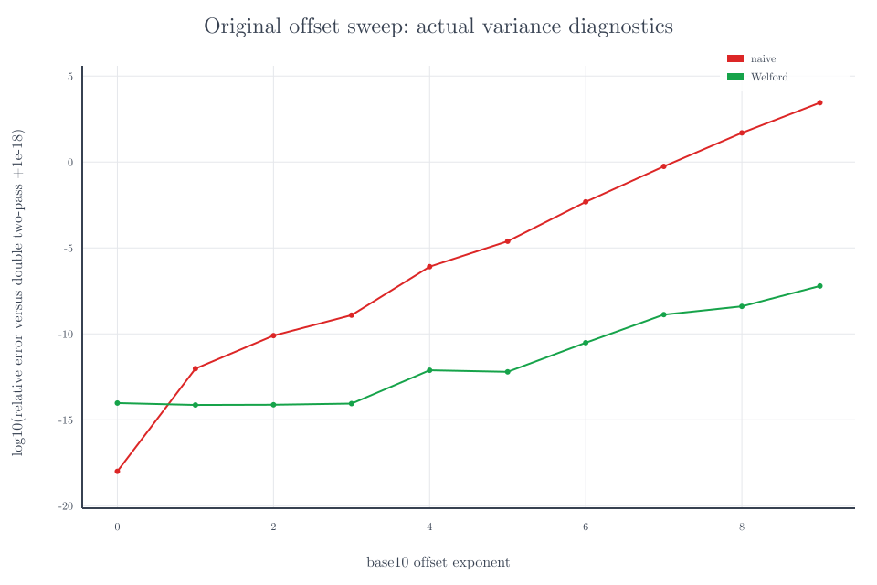
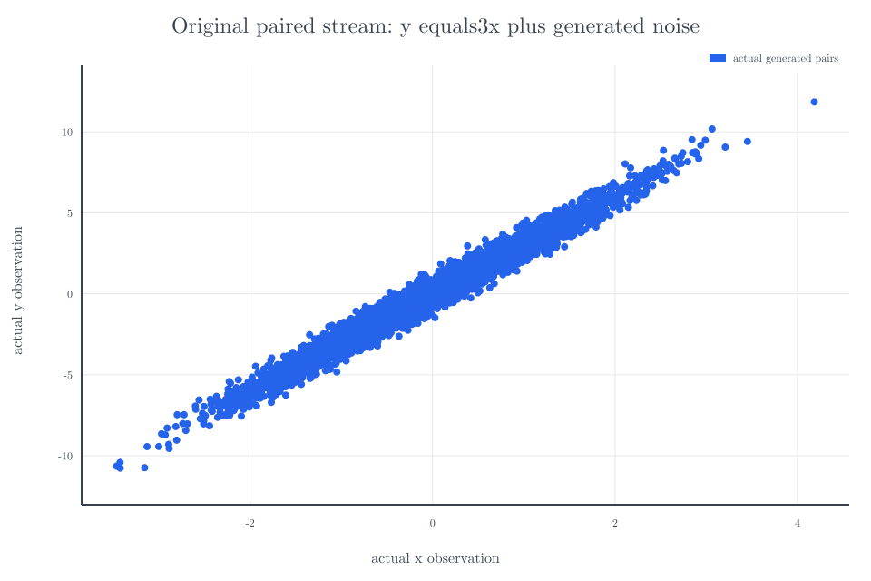
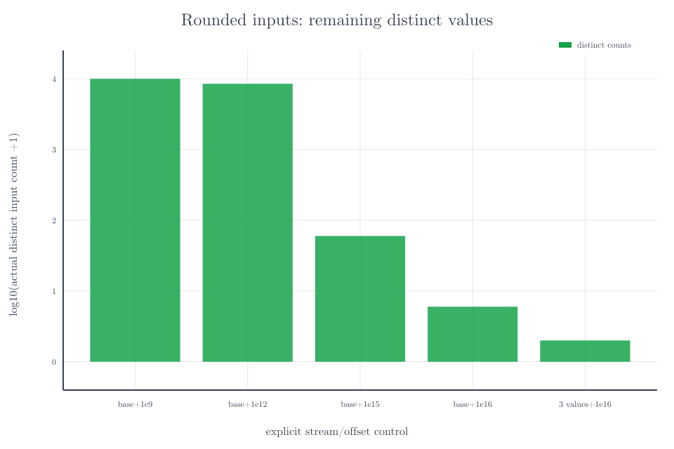

Online variance: actual Welford updates and finite precision
Abstract
Derive actual streaming centered moments from two observations, then retain the original seeded10000-value offset experiment and subsequent5000 paired covariance observations. Computed update/merge records and a centered-wide reference qualify the limits of numerical stability, including signal already lost when shifted inputs are rounded.
Centered moments instead of subtracting two large totals
For n accepted values, store the computed mean m_n and centered sum M2_n. Adding x uses
Population variance is M2/n; sample variance is M2/(n−1) for n≥2. Empty mean/variance and singleton sample variance return the historical0 convention, rather than an asserted unbiased estimate from insufficient data. The centered recurrence avoids the deliberate subtraction of a large squared mean from a large raw second moment. It does not guarantee exact variance, accuracy independent of offset, or recovery of input differences that binary64 has already erased.
Two hand-checkable actual additions
For[2,4], the second actual record has old mean2, delta2, new mean3, remaining delta1 and M2 increment2. Its sample variance is2. The diagram and table use canonical observations from the same atomic addition path used by ordinary OnlineVariance::add().
#include <dm/dm.hpp>
int main() {
std::filesystem::create_directories("build");
auto t = dm::algorithms::online_variance_trace({2, 4});
auto &s = t.updates[1];
dm::graphics::Diagram d;
d.node("old", {0, 0},
std::format("Actual old count {}\nmean {} M2 {}", s.before.count,
s.before.mean, s.before.m2));
d.node("update", {8, 0},
std::format("Actual x={} delta={}\nremaining delta={}", s.input,
double(s.delta), double(s.delta_after)));
d.node("new", {16, 0},
std::format("Actual new mean {}\nM2 {}", s.after.mean, s.after.m2));
d.edge("old", "update").edge("update", "new");
std::print("| actual input | count after | actual delta | actual new mean | actual remaining delta | " "actual M2 increment | actual M2 after |\n| ---: | ---: | ---: | ---: | ---: | ---: | ---: " "|\n");
for (auto &s : t.updates)
std::print("| {} | {} | {} | {} | {} | {} | {} |\n", s.input,
s.after.count, double(s.delta), s.after.mean,
double(s.delta_after), double(s.increment), s.after.m2);
d.save_svg("build/online_variance_tiny.svg");
}| actual input | count after | actual delta | actual new mean | actual remaining delta | actual M2 increment | actual M2 after |
|---|---|---|---|---|---|---|
| 2 | 1 | 2 | 2 | 0 | 0 | 0 |
| 4 | 2 | 2 | 3 | 1 | 2 | 2 |

Retain the original seeded offset sweep
A local MT19937_64 with seed1 and std::normal_distribution(0,1) first draws10000 base observations. For offsets10^k,k=0,...,9, the study forms the actual rounded double values base[i]+offset before applying any method. It retains the original double two-pass calculation, cancellation-prone sum-of-squares formula and canonical Welford accumulator. Normal-distribution transforms depend on the standard library, so the seed does not imply bitwise cross-library equality.
The old report called the double two-pass value a reference without qualifying its own error. The new table additionally uses an origin-centered long-double two-pass calculation on the same rounded shifted inputs. That is a stronger diagnostic, not an exact arithmetic certificate or the variance of inaccessible pre-rounding noise. The figure preserves the original comparison against double two-pass; the extra column makes its limitations inspectable.
#include <dm/dm.hpp>
int main() {
std::filesystem::create_directories("build");
auto data = dm::algorithms::online_variance_demo_data();
auto rows =
dm::algorithms::online_variance_offset_study(data.base,
{0, 1, 2, 3, 4, 5, 6, 7, 8,
9});
std::vector<double> x, naive, welford;
std::print("| offset exponent | original double two-pass | actual naive one-pass | actual Welford | " "centered-wide same-input reference | Welford relative error versus wide |\n| ---: | ---: | " "---: | ---: | ---: | ---: |\n");
for (auto &r : rows) {
x.push_back(r.exponent);
naive.push_back(std::log10(r.naive_relative_error + 1e-18));
welford.push_back(std::log10(r.welford_relative_error + 1e-18));
std::print("| {} | {:.12f} | {:.12f} | {:.12f} | {:.12f} | {:.5e} |\n",
r.exponent, r.two_pass, r.naive, r.welford,
double(r.wide_reference), r.welford_wide_relative_error);
}
auto p = dm::graphics::RPlot::create();
p.lines(x, naive, "naive", dm::graphics::RGBA{220, 38, 38, 255}).points(
x, naive, dm::graphics::RGBA{220, 38, 38, 255}, 3.).lines(
x, welford, "Welford", dm::graphics::RGBA{22, 163, 74, 255}).points(
x, welford, dm::graphics::RGBA{22, 163, 74, 255}, 3.);
p.title("Original offset sweep: actual variance diagnostics").x_label(
"base10 offset exponent").y_label("log10(relative error versus double two-pass +1e-18)").save_svg("build/online_variance_offsets.svg");
}| offset exponent | original double two-pass | actual naive one-pass | actual Welford | centered-wide same-input reference | Welford relative error versus wide |
|---|---|---|---|---|---|
| 0 | 1.036495421176 | 1.036495421176 | 1.036495421176 | 1.036495421176 | 7.08401e-15 |
| 1 | 1.036495421176 | 1.036495421175 | 1.036495421176 | 1.036495421176 | 6.02459e-15 |
| 2 | 1.036495421176 | 1.036495421258 | 1.036495421176 | 1.036495421176 | 3.85639e-15 |
| 3 | 1.036495421176 | 1.036495419905 | 1.036495421176 | 1.036495421176 | 6.46863e-15 |
| 4 | 1.036495421176 | 1.036494579634 | 1.036495421175 | 1.036495421176 | 7.60150e-13 |
| 5 | 1.036495421176 | 1.036520839584 | 1.036495421175 | 1.036495421176 | 6.21431e-13 |
| 6 | 1.036495421177 | 1.031503150315 | 1.036495421145 | 1.036495421177 | 3.05972e-11 |
| 7 | 1.036495421160 | 1.612961296130 | 1.036495419797 | 1.036495421160 | 1.31557e-09 |
| 8 | 1.036495421295 | 52.434043404340 | 1.036495417159 | 1.036495421295 | 3.99043e-09 |
| 9 | 1.036495421124 | -2936.306430643064 | 1.036495357748 | 1.036495421124 | 6.11447e-08 |

Chunk merging and the original covariance stream
For counts n_a,n_b, means m_a,m_b and centered sums A,B, write delta=m_b−m_a. Combining the two complete states gives
Empty-side merges copy or preserve the nonempty state. Source and destination are snapshotted before mutation, so self-merge duplicates the original sample state safely. In floating arithmetic, chunk grouping can change the last bits; mergeability does not mean associativity or bitwise equality with a sequential reduction.
The original RNG schedule continues after the10000 base draws with5000 pairs x=normal(),y=3x+.5normal(). The paired accumulator updates means and the centered cross-product sum, and uses marginal centered moments for correlation. The figure displays the actual synthetic pairs, not fitted values or a claim that the empirical correlation must equal its population value.
#include <dm/dm.hpp>
int main() {
std::filesystem::create_directories("build");
auto data = dm::algorithms::online_variance_demo_data();
dm::algorithms::OnlineVariance left, right, serial;
for (std::size_t i = 0; i < data.base.size(); ++i) {
serial.add(data.base[i]);
if (i < data.base.size() / 2)
left.add(data.base[i]);
else
right.add(data.base[i]);
}
auto merge = left.merge_observed(right);
dm::algorithms::OnlineCovariance covariance;
for (std::size_t i = 0; i < data.x.size(); ++i)
covariance.add(data.x[i], data.y[i]);
std::print("| actual quantity | computed value |\n| --- | ---: |\n| left source count | {} |\n| right " "source count | {} |\n| actual merge delta | {:.12f} |\n| actual between-group M2 correction " "| {:.12f} |\n| merged sample variance | {:.12f} |\n| serial sample variance | {:.12f} |\n| " "paired observations | {} |\n| actual sample covariance | {:.12f} |\n| actual correlation | " "{:.12f} |\n",
merge.left.count, merge.right.count, double(merge.delta),
double(merge.correction), left.sample_variance(),
serial.sample_variance(), covariance.count(),
covariance.sample_covariance(), covariance.correlation());
auto p = dm::graphics::RPlot::create();
p.points(data.x, data.y, "actual generated pairs",
dm::graphics::RGBA{37, 99, 235, 255});
p.title("Original paired stream: y equals3x plus generated noise").x_label(
"actual x observation").y_label("actual y observation").save_svg(
"build/online_variance_covariance.svg");
}| actual quantity | computed value |
|---|---|
| left source count | 5000 |
| right source count | 5000 |
| actual merge delta | -0.025843181719 |
| actual between-group M2 correction | 1.669675103415 |
| merged sample variance | 1.036495421176 |
| serial sample variance | 1.036495421176 |
| paired observations | 5000 |
| actual sample covariance | 3.000273668907 |
| actual correlation | 0.985945762494 |

Input rounding and atomic finite-state contracts
At sufficiently large offsets, distinct real perturbations can round to the same double. No streaming recurrence can reconstruct those missing differences. The final control explicitly shifts[-1,0,1] by10^16; the resulting rounded inputs coincide, and the same-input reference has zero spread. Relative errors then use flagged0 placeholders, not an invented claim of recovered unit variance. The other rows retain the original10000-value base stream under larger offsets. The final plot displays log10(count+1) so even the last few distinct values remain visible; the table retains raw counts.
Finite observations are required. Count overflow and nonfinite or unrepresentable moment states throw before mutation. Safe ordinary double update/merge order is retained; unsafe intermediates use long double before a checked finite-double commit. The paired covariance addition validates both marginal additions and its cross moment on copies, committing all states together. This guards failures without asserting universal statistical or numerical accuracy. Zero-spread correlation retains the historical0 convention.
Each streaming addition and merge uses O(1) state/work. Full trace capture first validates every observation and pre-admits2+N fixed records: initial/final states and each actual addition retaining its original input. Default1000000, zero disables; fixed scalar fields are part of their record rather than individually counted. No partial trace escapes failure, no caller references are retained, and this is not a byte or peak-RAM quota. The offset study separately limits the complete number of shifted work values and documents its own diagnostic methods.
#include <dm/dm.hpp>
int main() {
std::filesystem::create_directories("build");
auto data = dm::algorithms::online_variance_demo_data();
auto rows =
dm::algorithms::online_variance_offset_study(data.base, {9, 12, 15, 16});
auto collapsed =
dm::algorithms::online_variance_offset_study({-1, 0, 1}, {16});
rows.push_back(collapsed[0]);
std::vector<std::string> labels{"base+1e9", "base+1e12", "base+1e15",
"base+1e16", "3 values+1e16"};
std::vector<double> distinct;
std::print("| explicit control | actual input count | actual distinct rounded values | actual Welford " "sample variance | wide same-input reference | reference has spread |\n| --- | ---: | ---: | " "---: | ---: | --- |\n");
for (std::size_t i = 0; i < rows.size(); ++i) {
auto &r = rows[i];
distinct.push_back(std::log10(double(r.distinct_values) + 1.));
std::print("| {} | {} | {} | {:.12f} | {:.12f} | {} |\n", labels[i],
r.count, r.distinct_values, r.welford,
double(r.wide_reference), r.wide_reference_spread);
}
auto p = dm::graphics::RPlot::barplot(distinct, labels, "distinct counts");
p.title("Rounded inputs: remaining distinct values").x_label(
"explicit stream/offset control").y_label("log10(actual distinct input count +1)").save_svg("build/online_variance_rounding.svg");
}| explicit control | actual input count | actual distinct rounded values | actual Welford sample variance | wide same-input reference | reference has spread |
|---|---|---|---|---|---|
| base+1e9 | 10000 | 10000 | 1.036495357748 | 1.036495421124 | true |
| base+1e12 | 10000 | 8505 | 1.036636536880 | 1.036494238606 | true |
| base+1e15 | 10000 | 59 | 1.175959783478 | 1.038150409416 | true |
| base+1e16 | 10000 | 5 | 1.342134213421 | 1.342045844584 | true |
| 3 values+1e16 | 3 | 1 | 0.000000000000 | 0.000000000000 | false |

Verification
This ten-report batch passes 50 CTest cases, 25 directly instrumented ASan/UBSan
cases, 174 compiled and executed public examples, 707/707 scoped documentation
definitions and ten representative clangd hovers. Independent Python checks
verify 5662 records with 27916 checks: optimal prefix-code costs, train-only
Titanic category counts and held-out confusion, and all 5001 actual original
Lorenz RK4 steps. Frozen valid-input comparisons cover all ten producers, with
intentional guard, ownership, arithmetic and endpoint corrections stated
separately. Twelve checkout headers and twelve byte-identical installed
development headers compile independently; an installed-header native consumer
links and runs. All 40 complete programs execute, and 40 native figures have
been visually reviewed. HTML/Markdown exports preserve computed results and
image bytes. These are scoped native checks. Receipts:
build/mepml-conversion/batch-264-273/.